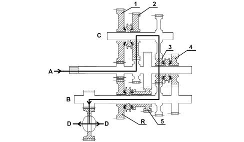
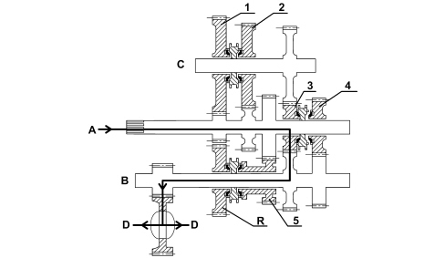
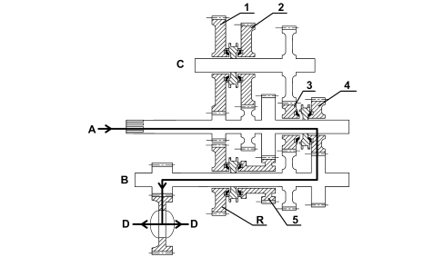
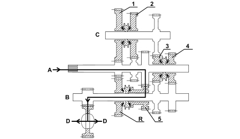
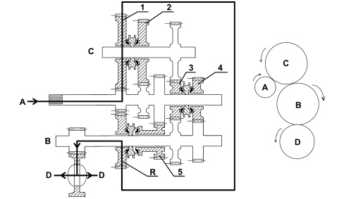

INTRODUCTION - GEARBOX
- Path
- Descriptions > 21 GEARBOX UNIT > INTRODUCTION - GEARBOX
- Kind
- system description
- Applies to
- engines: 2.2; all production periods
- Interactive page
- https://sloeber94.github.io/elrnDB-fCrm/en/#/194001960
Applies to: engines: 2.2; all production periods
SPECIFICATIONS
A new generation Getrag gearbox has been fitted on the 2.2 16v version.
The main features of the gearbox are:
- reduced axial size
- excellent manoeuvrability in all gears
- extremely quiet operation.
The gearbox configuration is tranverse with three shafts and an internal differential. There are HRC teeth for all the gears super finished after a thermal treatment.
The gearbox and clutch casings have been designed to produce the same resistance at minimum weight (FEM/FINITE ELEMENT METHOD).
The gears all have synchromesh including reverse and the synchronizer rings are all made from brass with a Borg Warner type molybdenum coating.
The first and second speed gears, including the synchronizer rings, are fitted on an idler shaft between the main shaft and the layshaft.
The gears and synchronizers for third and fourth speeds are located on the main shaft and for fifth and reverse on the layshaft.
For first and second speeds, the gears used the most, the synchronizer rings are the double cone type and ensure reduced engagement forces compared with traditional or single ring type synchronizers.
The internal gear control system is produced by means of three selection planes with a central gear positioner with a bearing.
The clutch is hydraulically operated with the C.S.C. system co-axial on the main shaft inside the gearbox.
The components inside the gearbox are lubricated dynamically, by means of the oil flowing through the ducts in the casings and the ports in the shafts as well as additional plastic ducts; all of this allows improved torque transmission and better protection against wear. This system has a device for the recovery of the clutch plate wear which allows the load on the clutch pedal to remain constant throughout the life of the vehicle
The advantages of this system lead to:
- improved acoustic comfort,
- reduction of the engagement force,
- no vibrations / shuddering of the lever.
TRANSMISSION OF POWER IN THE VARIOUS GEARS
First speed
The power enters from the main shaft, is transmitted to the intermediate shaft through the engagement of the 1st speed gear (assembled on the intermediate shaft).
The 3rd speed gear (assembled on the main shaft and in "neutral") allows the transmission of the power from the intermediate shaft to the layshaft and therefore to the differential thereby completing the kinematic chain for the first speed.
A - main shaft input
B - layshaft
C - intermediate shaft
D - differential output
Second speed
The power enters from the main shaft, is transmitted to the intermediate shaft through the engagement of the 2nd speed gear (assembled on the intermediate shaft).
The 3rd speed gear (assembled on the main shaft and in "neutral") allows the transmission of the power from the intermediate shaft to the layshaft and therefore to the differential thereby completing the kinematic chain for the second speed.

A - main shaft input
B - layshaft
C - intermediate shaft
D - differential output
Third speed
The drive that enters from the main shaft is transmitted directly to the layshaft and therefore to the differential through the engagement of the 3rd speed gears (assembled on the main shaft) producing the kinematic chain for the third speed.

A - main shaft input
B - layshaft
C - intermediate shaft
D - differential output
Fifth speed
The drive that enters from the main shaft is transmitted directly to the layshaft and therefore to the differential through the engagement of the 4th speed gears (assembled on the main shaft) producing the kinematic chain for the fourth speed.

A - main shaft input
B - layshaft
C - intermediate shaft
D - differential output
Fifth speed
The drive that enters from the main shaft is transmitted directly to the layshaft and therefore to the differential through the engagement of the 5th speed gears (assembled on the layshaft) producing the kinematic chain for the fifth speed.

A - main shaft input
B - layshaft
C - intermediate shaft
D - differential output
Reverse gear
The drive entering from the main shaft is transmitted to the layshaft by means of the kinematic chain produced by the gear for the 1st speed (assembled on the intermediate shaft in in "neutral") and that for reverse gear (assembled on the layshaft) at the time the respective synchronizer is engaged.

A - main shaft input
B - layshaft
C - intermediate shaft
D - differential output